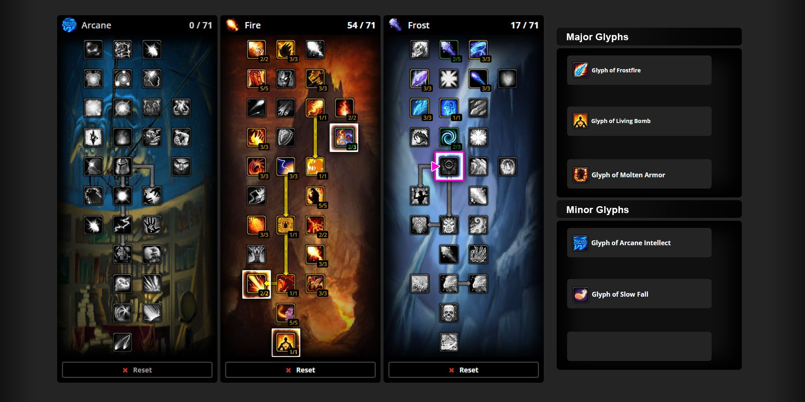

Eliott
Mage
Frostfire · Niveau 80
Build — Frostfire Bolt 0/54/17

Points : 0 Arcane · 54 Feu · 17 Givre
Build Frostfire Bolt (FFB) — Frostfire Bolt remplace Fireball comme sort principal. Il est à la fois Feu et Givre, ce qui le rend plus puissant : il bénéficie du talent Precision (+6% hit au lieu de 3%), d'Ice Shards (crits givre à 200%), et de Piercing Ice (+6% dégâts). Cap de hit plus facile à atteindre, meilleure efficacité mana, AoE supérieure au build TTW.
Talents Feu — 54 pts
- Improved Fireball 5/5 — Réduit le cast de Frostfire Bolt de 0,5s. Indispensable.
- Ignite 5/5 — Chaque crit laisse un DoT à 40% des dégâts. Énorme sur FFB qui crit souvent.
- Incineration 3/3 — +9% crit sur Frostfire Bolt, Fire Blast, Scorch.
- Fire Power 5/5 — +10% à tous les dégâts de feu. Talent passif majeur.
- Pyromaniac 3/3 — +15% dégâts si 3+ cibles sont en feu. Excellent en AoE.
- Hot Streak 3/3 — 2 crits consécutifs → Pyroblast instantané. Cœur du DPS.
- Burnout 5/5 — +50% dégâts des crits (coûte de la mana). Synergise avec Ice Shards.
- Combustion 1/1 — Chaque crit = +10% crit feu (stack). CD offensif majeur.
- Molten Fury 2/2 — +12% dégâts quand la cible est sous 35%. Execute phase.
- Living Bomb 1/1 — DoT + explosion. Maintenir en permanence sur la cible.
Talents Givre — 17 pts
- Precision 3/3 — +3% hit sur tous les sorts. Frostfire Bolt étant Givre ET Feu, il bénéficie de 6% hit total → cap de hit à 289 hit rating au lieu de 446.
- Ice Shards 5/5 — Les crits de sorts Givre font 200% de dégâts (+100%). Frostfire Bolt bénéficie pleinement de ce talent.
- Piercing Ice 3/3 — +6% à tous les dégâts de givre. S'applique à Frostfire Bolt.
- Ice Floes 3/3 — Réduit le CD des sorts Givre (Icy Veins, Cold Snap). Qualité de vie.
- Frostbite 3/3 — Filler pour atteindre les talents plus profonds. Snare occasionnel.
Glyphes
Majeurs
- Glyph of Frostfire — Frostfire Bolt inflige un DoT supplémentaire (3% des dégâts sur 12s) et réduit la vitesse de la cible de 40% pendant 4s. DPS net en hausse.
- Glyph of Living Bomb — Les ticks périodiques de Living Bomb peuvent désormais effectuer des coups critiques. Indispensable.
- Glyph of Molten Armor — Molten Armor convertit 20% de votre Esprit en bonus de coup critique de sort. Fort en ICC.
Mineurs
- Glyph of Arcane Intellect — Réduit le coût en mana d'Intelligence des arcanes de 50%. Qualité de vie.
- Glyph of Slow Fall — Slow Fall ne nécessite plus de plume légère comme réactif.
Stats cibles — Phase 4
Hit sort
446
Spell Power
>4 000
Crit
>40%
Haste
secondaire
Hit cap 446 toujours priorité absolue. Après : Spell Power > Crit > Haste. Le set 4p T10 (Sanctified Bloodmage) est indispensable pour le bonus de proc Hot Streak.
Best in Slot — Phase 4 (Icecrown Citadel 25 HM)
Tête
Cou
Épaules
Cape
Torse
Chemise
Brassards
Tabard
Gantelets
Ceinture
Jambes
Bottes
Anneau 1
Anneau 2
Trinket 1
Trinket 2
—
Main droite
Off-hand
Priorités de base — Single Target
1.
Living Bomb
— Maintenir en permanence sur la cible (DoT + explosion finale)
2.
Pyroblast!
— Dès que Hot Streak proc (instant) — priorité absolue, ne jamais retarder
3.
Frostfire Bolt
— Sort principal, remplace Fireball. Spam en permanence. Bénéficie d'Ice Shards + Ignite.
4.
Fire Blast
— Instant entre les casts pour enchaîner les crits et déclencher Hot Streak
5.
Scorch
— En déplacement uniquement (FFB ne se cast pas en mouvement)
❄️🔥 Frostfire Bolt bénéficie à la fois des multiplicateurs Feu (Ignite, Burnout) et Givre (Ice Shards) — chaque crit est particulièrement dévastateur.
Cooldowns offensifs
CD
Combustion
— Sur pull ou après un Pyroblast!. Chaque crit = +10% crit Feu. Empile vite avec FFB.
CD
Icy Veins
— +20% haste de cast pendant 20s. Disponible grâce à Ice Floes. Utiliser sur pull.
CD
Mirror Image
— Tôt dans le fight pour dump de la menace. 3 copies castent FFB.
CD
Cold Snap
— Reset le CD d'Icy Veins. Permet un second usage dans les fights longs.
❄️ Fenêtre de burst idéale : Icy Veins + Combustion → Pyroblast! (Hot Streak) → Fire Blast → Frostfire Bolt. Cold Snap pour doubler Icy Veins sur les phases clés.
Multi-cibles (AoE)
1.
Living Bomb
— Sur chaque cible si possible (explosions simultanées = burst massif)
2.
Flamestrike
— AoE au sol sur les packs. FFB améliore aussi Flamestrike via World in Flames.
3.
Blizzard
— FFB build = meilleur Blizzard que TTW grâce à Ice Shards (+100% crit dmg givre).
4.
Dragon's Breath
— Cône de feu frontal, bon burst AoE rapproché
🌀 L'AoE du FFB est supérieure au build TTW grâce à Ice Shards sur Blizzard et aux explosions de Living Bomb en chaîne.
Cliquez sur l'onglet pour charger les données en direct depuis wotlk5.com.
⚗️ Consommables — Fire Mage
Flasque
Flask of the Frost Wyrm — +125 Puissance des sorts · Obligatoire
Nourriture
Fish Feast — +80 SP · Meilleur choix en raid
Alt. Nourr.
Firecracker Salmon — +46 SP · Si pas de Fish Feast
Pre-potion
Potion of Wild Magic — +200 SP +200 Crit sort · 15s · 1s avant pull
En combat
Potion of Speed — +500 Haste · 15s · Aligner avec Combustion
💡 Tips
- Pre-pot Wild Magic → Combustion + Icy Veins + trinkets dès le pull = burst maximal.
- Potion of Speed en combat aligne parfaitement avec Combustion (le haste booste les crits).
- Firecracker Salmon > Tender Shoveltusk Steak pour le Mage Feu (46 vs 40 SP).